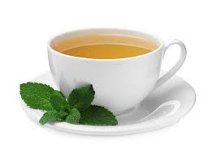

It is one of the most popular hot beverages in world and especially in India. A cup of milk tea (chai) in morning gives refreshing feel and put you on track of long hard day. It can be prepared with milk or milk powder and various types of plain or flavored tea powders. This recipe prepares Indian tea using milk, sugar, tea powder and water.
